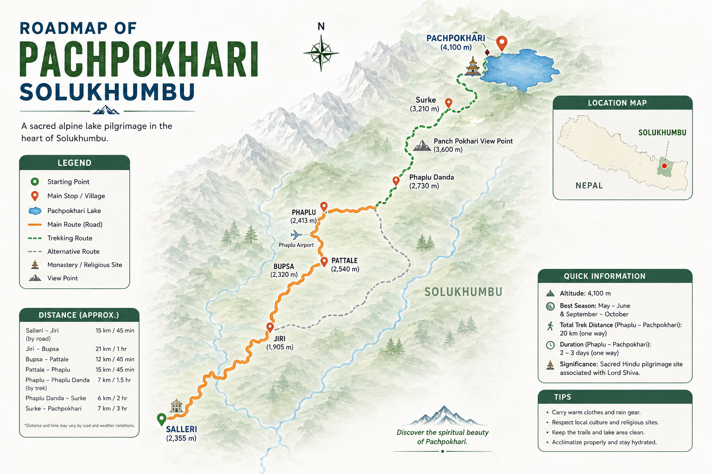

Pachpokhari Solukhumbu is a breathtaking alpine destination featuring five sacred lakes. Located away from crowded routes, it offers a peaceful journey through local villages, lush forests, and incredible Himalayan viewpoints at an altitude of 4,100m.
Note: Camping is highly recommended for the lake area.
Visualizing the path from Salleri to the Sacred Lakes.

(Route via Phaplu, Phaplu Danda, and Surke)
Click the button below to watch the cinematic trek experience on our Trek Hunters YouTube channel.
▶ Open in YouTube(This will open the video directly in your YouTube app or browser)